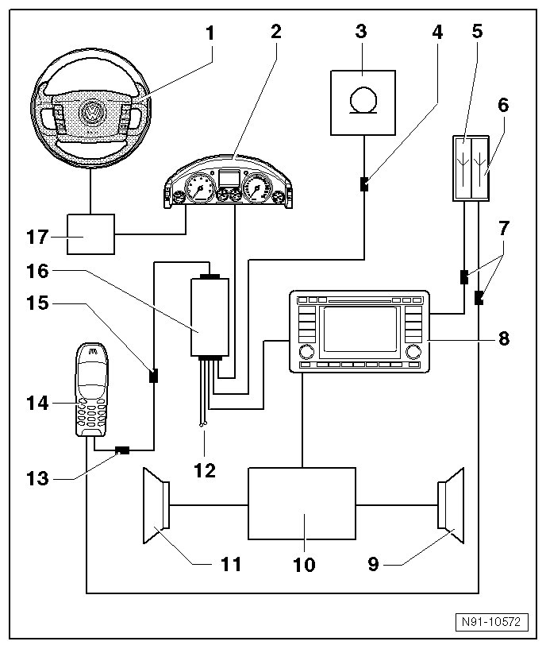

Telephone System with Telephone Cradle on Instrument Panel Overview
Telephone System with Telephone Cradle on Instrument Panel Overview
• The telephone system and telephone preparation components primarily differ in that the telephone system has a factory-installed cell phone. Therefore, the following overview only illustrates the complete telephone system.

1 - Multifunction Steering Wheel
2 - Instrument Cluster
3 - Telephone Microphone (R38) for hands-free operation of the telephone system
• Removing and installing, refer to --> [ Telephone Microphone ] Service and Repair
4 - Microphone connector
• in front light installation frame
5 - Navigation System Antenna (R50)
• installed in right front fender
6 - Telephone antenna (R65)
• installed in right front fender
• additional information in antenna systems chapter, refer to --> [ Antenna Systems ] Antenna Systems
7 - Antenna wiring connections
• Telephone antenna and navigation antenna connection
• in right footwell in front area of center console
8 - Radio (R) or Radio/Navigation Display Control Module (J503) (radio navigation system)
9 - Right speaker group
10 - Sound System Amplifier (J525)
11 - Left speaker group
12 - Telephone Operating Electronics Control Module (interface box) voltage supply
13 - Connector to telephone bracket
• installed in bottom of telephone cradle
14 - Cellular telephone (R54)
• Telephone base plate, removing and installing, refer to --> [ Telephone Mount ] Telephone Mount
15 - Connector to operating electronics control module
• installed in left of instrument panel near storage compartment in center of instrument panel
16 - Operating Electronics and Telephone Control Module (J412) (interface box)
• installed under instrument panel in right footwell in center console area
• Removing and installing, refer to --> [ Telephone Operating Electronics Control Module, Through 11.06 ] Service and Repair
17 - Steering Column Electronic Systems Control Module (J527)